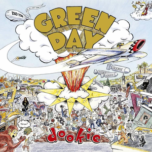
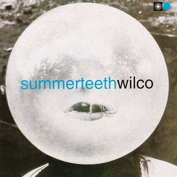
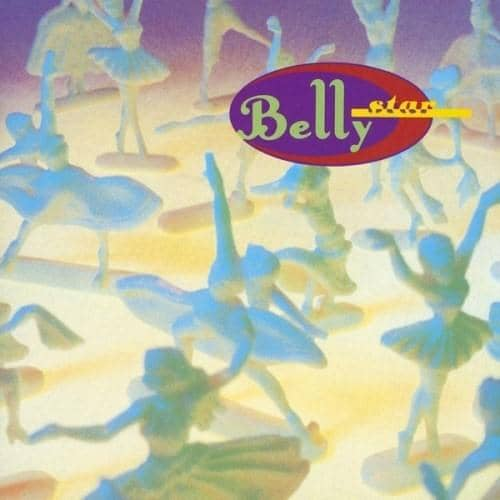
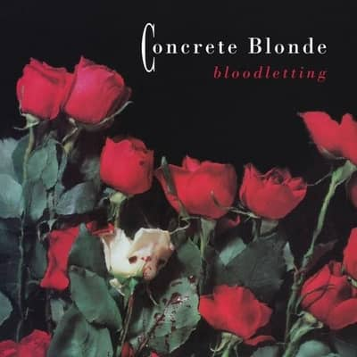
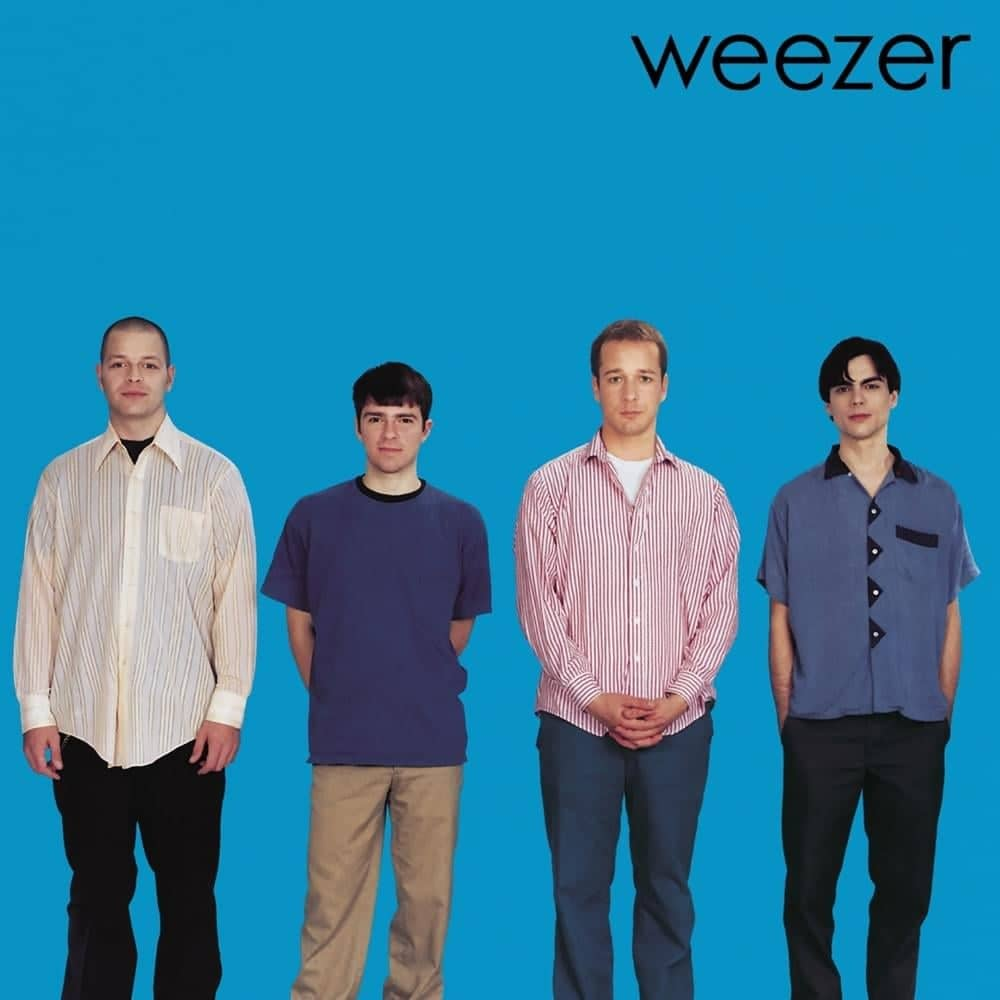
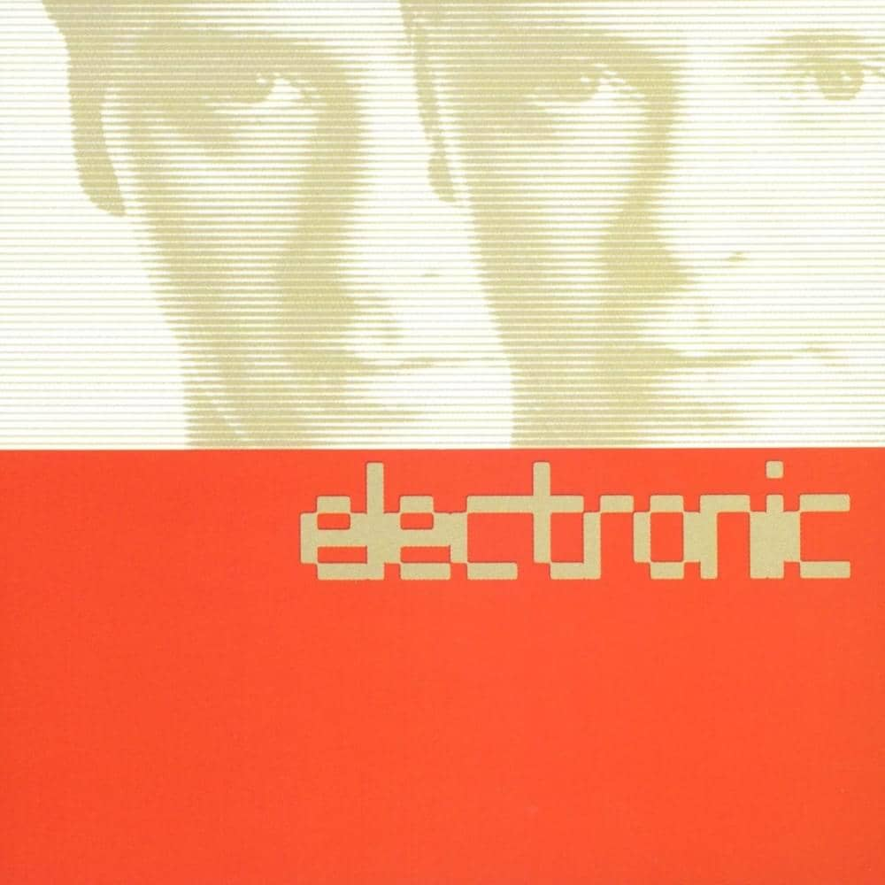

Mix Tape
Sort by Album
Sort by Artist
Sort by Release Date
Sort by Rating
Shuffle
Frayed
Melodic Mosaic






Sonic Footprint
Figures Unveiled: Spotlight on Stats
Top Creatives
Point Leaders
Genre Highlights
Alternative Ascent


 Morning Glory-.jpg)